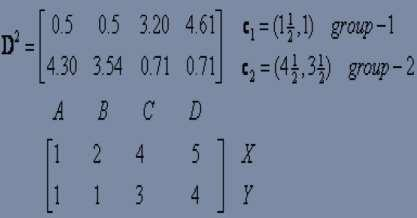
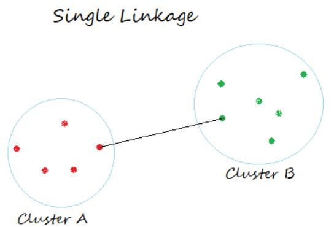
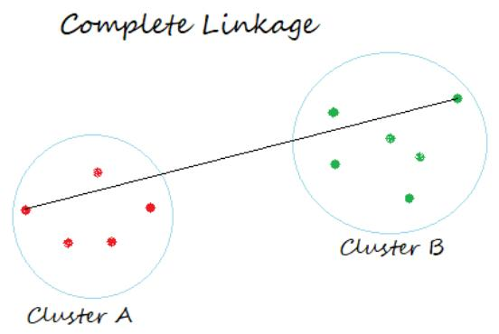
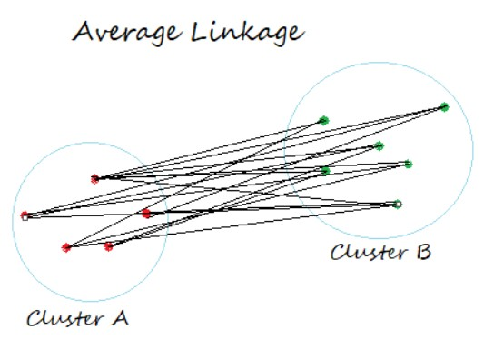
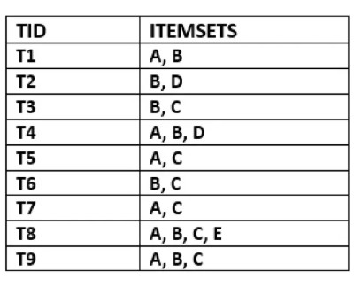

THE BIG PICTURE · WEEK 06
本周知识导图 Weekly knowledge map
先看中心问题，再按编号学习；点击分支标题进入讲解。
没有目标标签，怎样发现结构？How can we discover hidden structure?
- 确定聚类目标Clustering basics
- 组内相似度高，组间相似度低
- exclusive · fuzzy / overlapping · hierarchical
- 定义怎样才算相似Distance measures
- Euclidean · squared Euclidean
- Manhattan · cosine · feature scale
- 按中心分配与更新K-means
- 初始化 → assign → update → repeat
- centroid mean · k · SSE / elbow · 限制
- 建立嵌套层次Hierarchical clustering
- agglomerative / divisive · linkage
- single / complete / average · dendrogram
- 衡量物品共现Association rules
- itemset · transaction · A → B
- support · confidence · lift
- 筛出频繁项集和规则Apriori
- 候选 Ck → 剪枝 → 频繁 Lk
- minimum support → 生成规则 → confidence
学习顺序 / Order理解相似性 → 定义距离 → K-means → 层次聚类 → 关联规则 → Apriori
记忆线索：聚类看“对象是否相似”；关联看“物品是否共现”。两类问题分开判断。
英文表达 / English frameClustering groups similar objects. Association rules describe items that often occur together.
依据本周现有课件讲解整理的学习导航；分支顺序用于复习，不代表官方题量或分值。 A study structure, not an official exam weighting.
知识点概括 / Knowledge overview
无监督学习没有 labelled target，目标是发现隐藏结构。课件主线是：什么是 good clustering → 用什么 distance → K-means 如何循环 → hierarchical 如何合并/拆分 → association rules 如何用 support、confidence、lift 评价。
Unsupervised learning finds hidden structure without labelled targets. The lecture moves from distance and clustering to association rules.
学习路径 / Learning path
goal · pattern · similarity
Euclidean · Manhattan · cosine
K-means assign → update
linkage → merge → dendrogram
support · confidence · lift
Ck → prune → Lk → rules
| 课件参考 | 学习重点 | 手算能力 |
|---|---|---|
Week 6-1_Unsupervised Learning.md | clustering families、K-means、hierarchical、association rules、Apriori。 | 一轮 K-means、一次 linkage merge、一组 Apriori candidates/rules。 |
| 文件标签说明 | 文件名是 Week 6，但课件封面写 Lecture 5-1。 | 具体教学周映射资料未知，不据此创造额外 Week 5 内容。 |
| 本页补充 | 把公式转成 Python 验证，并整理图片题读法。 | 先写公式和中间步骤，再用代码核对。 |
1. Clustering 基础 / What is clustering?
Clustering 把相似对象放在同一组，使组内相似度 high、组间相似度 low。它用于 marketing、insurance、land use、seismic studies、recommendation 和 anomaly detection。
| Type | Meaning |
|---|---|
| Exclusive | 一个对象只属于一个 cluster；K-means 属于此类。 |
| Overlapping / fuzzy | 对象可与多个 cluster 有不同关联度；C-means 是例子。 |
| Hierarchical | cluster 之间有 parent/child 层次关系。 |
2. Distance measures / 距离
| Measure | Idea | Memory |
|---|---|---|
| Euclidean | 平方差求和再开方，普通直线距离。 | straight line |
| Squared Euclidean | 平方差求和，不开方。 | same without root |
| Manhattan | 各坐标绝对差之和。 | grid/axis path |
| Cosine | 用 dot product 和向量范数求 cosine similarity；distance = 1 − similarity。 | direction |
The distance measure determines similarity and influences the shape of clusters.
3. K-means：分配与更新 / Assign and update
- Choose
kand initializekcentroids。 - 计算每个 point 到每个 centroid 的距离，分到最近的 cluster。
- 把每个 cluster 的 centroid 更新为其成员的 mean。
- 若 centroid 或 membership 变化，重复第 2、3 步；否则停止。
choose k
initialize centroids
repeat:
assign each point to its nearest centroid
update each centroid to the mean of its cluster
until assignments stop changing4. K-means 截图补充：怎样完成一轮手算

Distance → membership → centroid
课件图把一次 iteration 分成三件事：写出每个点到每个中心的 distance；选最小值决定 membership；对每簇坐标取 mean 得到新 centroid。
Assign each point to its nearest centroid, then recompute each centroid as the mean of its assigned points.
手算草稿格式
Point | d(C1) | d(C2) | chosen cluster
A | ... | ... | ...
B | ... | ... | ...
new C1 = mean(points assigned to C1)
new C2 = mean(points assigned to C2)所有距离必须使用同一种 metric。若题目要求 one epoch，就完成一次 assignment 和一次 centroid update；不要擅自继续到收敛。
Squared Euclidean: Σ(xᵢ−yᵢ)²
Manhattan: Σ|xᵢ−yᵢ|
Cosine distance: 1 − (x·y)/(||x|| ||y||)
Scale warning：如果一个 feature 的数值范围远大于其他 feature，它会支配 Euclidean/Manhattan distance，因此聚类前常需 scaling。
5. 选择 k 与优缺点 / Choosing k and limitations
课件介绍 visual inspection 和 elbow method。SSE 是点到所属 centroid 的 squared distance 总和；随着 k 增大 SSE 通常下降，elbow 是下降突然变缓的位置。
Pros
Simple、fast、可收敛到 within cluster squared error 的 local minimum。
Cons
需要选择 k；对 initial centers 和 outliers 敏感；偏好 spherical clusters；需要考虑 scaling。
6. Hierarchical clustering / 层次聚类
Hierarchical clustering 产生 nested sequence 和 dendrogram。
Agglomerative
Bottom up：每个点先是一个 cluster，再反复合并最近的两个。
Start with singleton clusters and merge upward.
Divisive
Top down：所有点先在一个 cluster，再反复拆分。
Start with one cluster and split downward.
| Linkage | Cluster distance |
|---|---|
| Single link | 两簇成员之间的最小距离。 |
| Complete link | 两簇成员之间的最大距离。 |
| Average / centroid | 平均 pairwise distance 或 cluster centroid 关系。 |
停止可以按预先的 cluster 数、cohesion、diameter threshold，或在 dendrogram 上选择切割高度。层次方法的优点是可解释且不必一开始知道 k；缺点是大数据集成本高，对 outliers 和不同大小 cluster 敏感。
7. 选 k、SSE 与层次聚类
Elbow method
对多个 k 计算 SSE 并作图；选择下降速度明显变缓的 bend。SSE 随 k 增大通常不会增加，但 elbow 是 heuristic：可能有多个 elbow，也可能没有清楚 elbow。
Choose the bend where adding another cluster produces a much smaller reduction in SSE.

Dendrogram
每次 merge 在树上形成一条更高的连接；连接高度表示该次合并的 dissimilarity/distance。在某个高度画水平切线，切到的主分支数量就是 cluster 数。

Single linkage
使用两簇中最近一对点的距离；容易形成 chaining。

Complete linkage
使用两簇中最远一对点的距离；倾向较紧凑 clusters。

Average linkage
计算跨两簇所有 point pairs 的平均距离；centroid linkage 则比较簇中心，二者不要混为一谈。
| Approach | Start | Repeat | Stop |
|---|---|---|---|
| Agglomerative | 每个 point 是一个 cluster | 按 linkage 合并最近两簇 | 达到指定 cluster 数或所有点合并 |
| Divisive | 所有 points 在一个 cluster | 选择 cluster 并拆分 | 达到指定数量/直径/cohesion 条件 |
8. Association rules / 关联规则
规则写成 X → Y。X 是 antecedent，Y 是 consequent。市场购物篮分析的意思是：购买 X 的交易是否也常购买 Y。
| Metric | Formula | Meaning |
|---|---|---|
| Support | freq(X) / total transactions | X 出现的频率。 |
| Confidence | freq(X,Y) / freq(X) | 出现 X 时同时出现 Y 的比例。 |
| Lift | support(X,Y)/(support(X)*support(Y)) | 相对独立出现的关联强度；1 约独立，>1 正关联，<1 负关联。 |
9. Apriori：逐层生成与剪枝 / Apriori steps
- 从 transaction database 统计 single item candidates
C1。 - 保留 support 达到阈值的 frequent set
L1。 - 用 frequent sets 生成更大的
C2、C3……。 - 删掉低于 minimum support 的 candidates；Apriori property 是 frequent itemset 的每个子集也必须 frequent。
- 从最大 frequent itemsets 生成规则，按 minimum confidence 筛选，可按 lift 排序。
# mental workflow
C1 -> keep support >= min_support -> L1
L1 -> generate candidates -> C2 -> prune -> L2
L2 -> generate candidates -> C3 -> prune -> L3
frequent itemsets -> rules -> confidence -> lift ranking“Apriori prunes a candidate when its support is below the threshold. A frequent itemset must have frequent subsets.”
10. Association rules 与 Apriori 完整流程

Transaction database
每一行是一笔 transaction，每一格的 items 组成集合。Support count 是包含 itemset 的 transaction 数，不是商品出现次数的简单相加。

Candidates and frequent sets
Ck 是 size-k candidate itemsets；删除 support 低于阈值者得到 Lk。图中红色项表示被阈值剪掉。
confidence(X→Y) = support(X∪Y) / support(X)
lift(X→Y) = confidence(X→Y) / support(Y)
- 扫描数据库得到
C1support counts，按 minimum support 得到L1。 - Self-join
L1产生C2；若 candidate 的任一子集不 frequent，依据 Apriori property 立即剪枝。 - 再次扫描计算
C2support，得到L2；逐层重复直到Lk为空。 - 对 frequent itemset
F的每个非空 proper subsetA生成A → F−A。 - 计算 confidence，保留达到 minimum confidence 的规则，再用 lift 判断关联方向与强度。
| Lift | Interpretation |
|---|---|
> 1 | Positive association：X 出现时 Y 比基准更常出现。 |
= 1 | Approximate independence。 |
< 1 | Negative association / substitution signal。 |
11. Apriori 讲义算例 / Worked lecture pattern
课件的 A–E transaction example 使用 minimum support count = 2、minimum confidence = 50%。下表用于理解每层 candidate 如何被筛选；它属于课程讲义案例，不是去年样题或模拟卷答案。
| Level | Candidates and counts | Frequent result |
|---|---|---|
| C1 → L1 | A:6, B:7, C:5, D:2, E:1 | L1={A,B,C,D}；E 被剪掉。 |
| C2 → L2 | AB:4, AC:4, AD:1, BC:4, BD:2, CE:0 | L2={AB,AC,BC,BD}。 |
| C3 → L3 | ABC:2, BCD:1, ACD:0, ABD:0 | L3={ABC}。 |
由 ABC 生成规则时，confidence 的 denominator 取 antecedent support：conf(AB→C)=support(ABC)/support(AB)=2/4=50%；而 conf(A→BC)=2/6≈33%。因此方向改变会改变 confidence，即使 union itemset 相同。
12. 用 Python 检查手算 / Verification code and output
本课件主要要求理解公式和手算步骤，没有指定必须使用某个 Python clustering/Apriori package。下面代码只用于验证课件计算，不把额外库 API 当成正式考点。
Euclidean distance
import numpy as np
point = np.array([1, 2])
centroid = np.array([4, 6])
distance = np.linalg.norm(point - centroid)
print(distance)5.0先逐坐标相减得到 [-3, -4]，平方和为 25，再开方得到 5。考试手算要写出中间式，不只写最终数值。
更新 K-means centroid
points = np.array([
[1, 1], [2, 1],
[8, 8], [9, 8]
])
labels = np.array([0, 0, 1, 1])
new_centroids = np.vstack([
points[labels == i].mean(axis=0)
for i in range(2)
])
print(new_centroids)[[1.5 1. ]
[8.5 8. ]]labels == i 选出属于 cluster i 的 rows；mean(axis=0) 对每个 coordinate 取平均；vstack 把两个新 centroids 叠成 2-D array。
Support、confidence、lift
transactions = 100
count_x = 40
count_y = 10
count_xy = 7
support = count_xy / transactions
confidence = count_xy / count_x
lift = confidence / (count_y / transactions)
print(support, confidence, lift)0.07 0.175 1.75Support 是 7%；confidence 是 17.5%；lift=1.75 表示 X 出现时 Y 的出现率是其基准率的 1.75 倍。Association 仍不等于 causation。
13. 无监督学习剩余正式考点
| Clustering family | Course idea | Key distinction |
|---|---|---|
| Exclusive / partitioning | 每个 object 只属于一个 cluster；K-means 是例子。 | Hard membership。 |
| Overlapping / fuzzy | 一个 object 可对多个 clusters 有不同 membership degree；fuzzy C-means 是例子。 | Soft membership。 |
| Hierarchical | 建立 parent/child nested clusters，并用 dendrogram 表示。 | 不必一开始固定最终 k。 |
| Density-based | 连接 high-density regions，以 sparse regions 分隔 clusters，可发现 arbitrary shapes。 | 能把 isolated points 视为 noise；varying density/high dimension 较困难。 |
| Distribution model-based | 假设数据由若干 probability distributions 生成，根据属于每个 distribution 的概率分组。 | 结果依赖 distribution/model assumptions。 |
Good clustering 与停止条件
- Good clustering 追求 high intra-cluster similarity 与 low inter-cluster similarity；结果受 representation、distance measure、algorithm 与 implementation 影响。
- Agglomerative 可在达到预定 k、下一次 merge 会导致 low cohesion、或新 cluster diameter 超过 threshold 时停止。
- Diameter 是一个 cluster 中任意两点之间的 maximum distance。
- Unsupervised data 更容易获得，但因为没有 known target，评价与解释通常更困难，结果也不保证代表真实类别。
Apriori 补充
- 课件描述 Apriori 使用 breadth-first、level-wise 搜索，并可借助 hash tree 计算 candidates。
- 若 threshold 以比例给出，minimum support count = support threshold × number of transactions；实际使用时需满足规定的整数计数规则。
- Apriori property：frequent itemset 的每个 subset 都 frequent；等价逆否是含有 infrequent subset 的 candidate 必须被剪掉。
- Support 衡量普遍程度，confidence 是条件可靠度，lift 用基准频率校正 confidence；association 不等于 causation。
14. 应用、优点与限制
| Method | Applications in slides | Limitations |
|---|---|---|
| K-means | news grouping、customer segmentation、recommendation、image grouping、anomaly exploration | 需预先选 k；对 initial centroids、outliers、scaling 敏感；偏好近似 spherical clusters。 |
| Hierarchical | taxonomy、biology/genetics、document/customer hierarchy | 计算和存储成本高；早期 merge/split 通常不可撤销；对 noise/outliers 敏感。 |
| Association rules | market basket、recommendation、medical diagnosis、protein sequences | 低 thresholds 会产生大量规则；高 support 不代表 causation；需结合业务解释 lift。 |
15. Week 6 图片题考点 / Visual-question checklist
| 课件图 | 读图关键 | 可能要求 |
|---|---|---|
| K-means points/centroids 图 | 初始 centers、每点到各 center 的 distance、nearest assignment、cluster mean。 | 完成 one epoch：先分组，再更新 centroids；题目只要求一轮时不要继续。 |
| Elbow curve | x-axis 是 k，y-axis 是 SSE；找下降明显变缓的位置。 | 选择候选 k，并说明 elbow 是 heuristic 而非唯一答案。 |
| Dendrogram | merge height 表示 dissimilarity；水平切线穿过的主 branches 数是 clusters 数。 | 给 cut height 读 cluster 数，或给 cluster 数选择 cut。 |
| Single/complete/average linkage 图 | 比较的是最近点、最远点，还是所有跨簇 point pairs 的平均。 | 从 distance matrix 计算下一次应合并哪两簇。 |
| Transaction table | 一行是一笔 transaction；itemset count 是包含整个集合的行数。 | 计算 C1/C2 support count，不能把单个 item counts 相加。 |
| Ck/Lk Apriori 表 | Ck 是 candidates，Lk 是达到 minimum support 的 frequent sets。 | 圈出被剪枝 candidates，并用 Apriori property 说明原因。 |
| Association-rule 公式图 | confidence denominator 是 antecedent support；lift 还要除以 consequent baseline support。 | 同一 union itemset 改变箭头方向后重新计算 confidence。 |
16. 可能的考试问法 / Possible exam prompts
- 区分 supervised 与 unsupervised data/goal。
- 将 clustering family、distance measure 或 linkage 与定义匹配。
- 判断 K-means 对 k、initialization、outliers 和 scaling 的敏感性。
- 解释 dendrogram height/cut 与 cluster count。
- 判断 support、confidence、lift 和 Apriori property。
- 用 Euclidean/Manhattan/cosine 计算两个 points 的关系。
- 完成一轮 K-means assignment 与 centroid update。
- 从 distance matrix 使用 single/complete/average linkage 更新距离并画 dendrogram。
- 从 transactions 建立 C1/L1/C2/L2，并说明剪枝。
- 计算规则的 support、confidence、lift 并解释 lift 大于/等于/小于 1。
17. 英文与自检 / English and check
“Unsupervised learning uses unlabelled data to discover hidden patterns.”
“K-means repeatedly assigns points to the nearest centroid and updates the centroids.”
“Confidence is the proportion of transactions containing Y among transactions containing X.”
- 我能解释 high intra-cluster 和 low inter-cluster similarity。
- 我能比较四种 distance measure。
- 我能写 K-means 的四个步骤和停止条件。
- 我能解释 elbow、SSE、initialization 和 outliers。
- 我能比较 agglomerative 与 divisive。
- 我能区分 single、complete、average/centroid link。
- 我能计算 support、confidence、lift 的结构。
- 我能写 Apriori 的 Ck/Lk 和剪枝流程。
0 / 0 completed